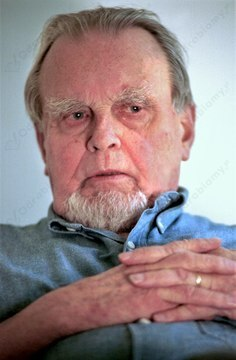
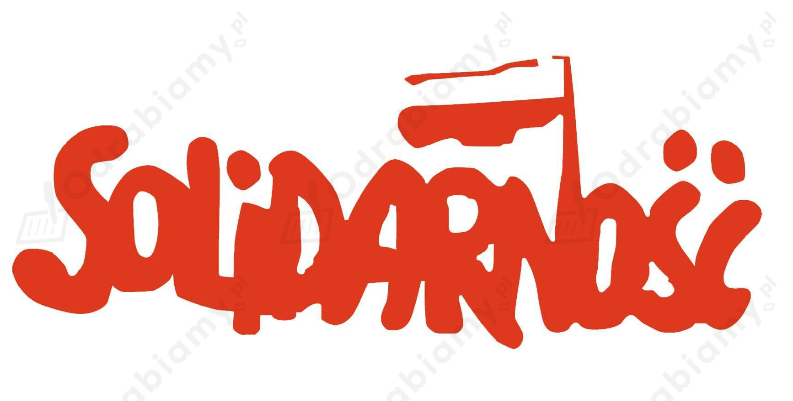

9 października 1980 r. Czesław Miłosz został laureatem Literackiej Nagrody Nobla. Nagroda Nobla dla Miłosza była interpretowana jako wyraz poparcia dla politycznych przemian zachodzących we wschodnim bloku. Trudno bowiem uznać za przypadek, że polski emigracyjny poeta otrzymał ją w roku utworzenia Solidarności. Otrzymanie Nagrody Nobla przez Miłosza nagłośniło polską sprawę na arenie międzynarodowej oraz otworzyło mu drogę do polskich czytelników.

Czesław Miłosz w 1999 r., źródło zdjęcia: Wikimedia Commons.
14 sierpnia 1980 r. robotnicy Stoczni Gdańskiej im. Lenina rozpoczęli strajk. Stoczniowcy sprzeciwiali się kolejnym podwyżkom cen i domagali się przywrócenia do pracy suwnicowej Anny Walentynowicz. Latem 1980 r. strajki ogarnęły już całą Polskę. Władze były przerażone ich zasięgiem i tym razem nie odważyły się użyć siły.
Na czele strajku w Stoczni Gdańskiej stanął Lech Wałęsa. Utworzono Międzyzakładowy Komitet Strajkowy (MKS), który opracował 21 postulatów. Protestujących robotników wsparli przedstawiciele inteligencji. 31 sierpnia komunistyczne władze podpisały w Gdańsku porozumienia za strajkującymi (porozumienia sierpniowe). We wrześniu 1980 r. powstał Niezależny Samorządny Związek Zawodowy "Solidarność", który oficjalnie zarejestrowano w listopadzie.
"Solidarność" stała się nie tylko związkiem zawodowym, ale także największym ruchem społeczno-politycznym w dziejach Polski. W 1981 r. liczyła ok. 9,5 mln członków (na 35 milionów Polaków). Była legalną opozycją wobec władz PRL i jedyną niezależną obywatelską organizacją w całym bloku wschodnim.

Źródło grafiki: www.old.pum.edu.pl
Karnawał "Solidarności" to okres kilkunastu miesięcy od sierpnia 1980 do wydarzenia wprowadzenia stanu wojennego 13 grudnia 1981 r. Charakteryzował się względnym osłabieniem reżimu komunistycznego, który objawiał się przez ograniczenie cenzury i zagwarantowania niewielkich swobód obywatelskich. Ponadto w tym czasie ruch "Solidarności" rósł w siłę i stawał się coraz popularniejszy. Był to czas (15 miesięcy) legalnej działalności "Solidarności", podczas którego społeczeństwo po raz pierwszy niemal zachłysnęło się wolnością. Niezadowolone władze komunistyczne, dostrzegając obawy wynikające z rozrostu opozycji podjęły, decyzję o wprowadzeniu stanu wojennego.
Działania podjęte przez komunistów w celu ograniczenia w społeczeństwie wpływów "Solidarności" to np.: